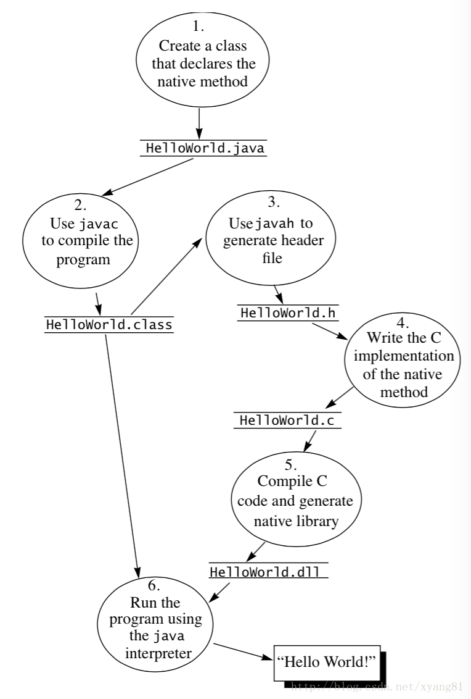

不要给自己找到不学习的理由
概述
JNI（Java Native Interface,Java本地接口）是一种编程框架,使得Java虚拟机中的Java程序可以调用本地应用/或库,也可以被其他程序调用。本地程序一般是用其它语言（C、C++或汇编语言等）编写的, 并且被编译为基于本机硬件和操作系统的程序。
我们知道，java标准库不支持的平台相关功能或者程序库，JNI允许程序员用其他编程语言来解决用纯粹的Java代码不好处理的情况，说白了java是高级的语言，纯粹的代码语言，不能直接和系统硬件对接，必须借助JNI来实现和平台系统的对接。许多基于JNI的标准库提供了很多功能给程序员使用, 例如文件I/O、音频相关的功能等。
关于JNI的解释，百度google一大堆，笔者可自行去理解。本文只是说明
JVM是如何调用native方法的。
陷阱与诱惑
- 在使用JNI的过程中,可能因为某些微小的BUG,对整个JVM造成很难重现和调试的错误。
- 依赖于JNI的应用失去了Java的平台移植性（一种解决办法是为每个平台编写专门的JNI代码，然后在Java代码中,根据操作系统载入正确的JNI代码）。
- JNI框架并没有对 non-JVM 内存提供自动垃圾回收机制, Native代码(如汇编语言)分配的内存和资源，需要其自身负责进行显式的释放。
- JNI在某些情况下可能带来很大的开销和性能损失。
- 调用 JNI 方法是很笨重的操作, 特别是在多次重复调用的情况下。
- Native 方法不会被 JVM 内联, 也不会被 JIT compiled 优化 , 因为方法已经被编译过了。
- Java 数组可能会被拷贝一份,以传递给 native 方法, 执行完之后再拷贝回去. 其开销与数组的长度是线性相关的.
- 如果传递一个对象给方法,或者需要一个回调,那么 Native 方法可能会自己调用JVM。 访问Java对象的属性、方法和类型时, Native代码需要类似reflection的东西。签名由字符串指定,通从JVM中查询。这非常缓慢并且容易出错。
- Java 中的字符串(String) 也是对象, 有 length 属性,并且是编码过的. 读取或者创建字符串都需要一次时间复杂度为 O(n) 的复制操作.
JNI开发流程
开发 JNI 程序会受到系统环境的限制，因为用 C/C++ 语言写出来的代码或模块，编译过程当中要依赖当前操作系统环境所提供的一些库函数，并和本地库链接在一起。而且编译后生成的二进制代码只能在本地操作系统环境下运行，因为不同的操作系统环境，有自己的本地库和 CPU 指令集，而且各个平台对标准 C/C++ 的规范和标准库函数实现方式也有所区别。这就造成使用了 JNI 接口的 JAVA 程序，不再像以前那样自由的跨平台。如果要实现跨平台，就必须将本地代码在不同的操作系统平台下编译出相应的动态库。
JNI 开发流程主要分为以下 6 步：
- 编写声明了 native 方法的 Java 类。
- 将 Java 源代码编译成 class 字节码文件
- 用 javah -jni 命令生成.h头文件（javah 是 jdk 自带的一个命令，-jni 参数表示将 class 中用native 声明的函数生成 JNI 规则的函数）
- 用本地代码实现.h头文件中的函数
- 将本地代码编译成动态库（Windows：*.dll，linux/unix：*.so，mac os x：*.jnilib）
- 拷贝动态库至 java.library.path 本地库搜索目录下，并运行 Java 程序

开发HelloWorld程序
以在linux环境下开发编译为例
编写声明了 native 方法的 Java 类
public class HelloJNI {
public static native String sayHello(String name); // 1.声明这是一个native函数，由本地代码实现
public static void main(String[] args) {
String text = sayHello("hello jni"); // 3.调用本地函数
System.out.println("Hello,I'm java,the return String is : " + text);
}
static {
System.loadLibrary("HelloJNI"); // 2.加载实现了native函数的动态库，只需要写动态库的名字
}
}
编译class文件
$ /home/ccr/jdk1.7.0_80/bin/javac -cp /home/ccr/jdk1.7.0_80/jre/lib/rt.jar HelloJNI.java
生成.h头文件
.h头文件可以类比java接口类去理解。.h中一般放的是同名.c文件中定义的变量、数组、函数的声明，需要让.c外部使用的声明。头文件中只是申明变量函数，具体的初始化和实现放在同名.c文件或.cpp文件中。
$ /home/ccr/jdk1.7.0_80/bin/javah -jni -d ./jni HelloJNI
参数说明:
classpath：类搜索路径，这里表示从当前的 bin 目录下查找d：将生成的头文件放到当前的 jni 目录下o： 指定生成的头文件名称，默认以类全路径名生成（包名+类名.h）
注意：
-d和-o只能使用其中一个参数。
生成的头文件jni/HelloJNI.h
/- DO NOT EDIT THIS FILE - it is machine generated */
/- Header for class HelloJNI */
#ifndef _Included_HelloJNI
#define _Included_HelloJNI
#ifdef __cplusplus
extern "C" {
/*
- Class: HelloJNI
- Method: sayHello
- Signature: (Ljava/lang/String;)Ljava/lang/String;
*/
JNIEXPORT jstring JNICALL Java_HelloJNI_sayHello
(JNIEnv *, jclass, jstring);
}
实现头文件中申明的函数
编辑HelloJNI.c
// HelloJNI.c
/- Header for class HelloJNI */
#ifdef __cplusplus
extern "C"
{
/*
- Class: HelloJNI
- Method: sayHello
- Signature: (Ljava/lang/String;)Ljava/lang/String;
*/
JNIEXPORT jstring JNICALL Java_HelloJNI_sayHello
(JNIEnv *env, jclass cls, jstring j_str)
{
const char *c_str = NULL;
char buff[128] = { 0 };
c_str = (*env)->GetStringUTFChars(env, j_str, NULL);
if (c_str == NULL)
{
printf("out of memory.\n");
return NULL;
}
(*env)->ReleaseStringUTFChars(env, j_str, c_str);
printf("Hello,I'm C++,the Java Str is:%s\n", c_str);
sprintf(buff, "hello %s", c_str);
return (*env)->NewStringUTF(env, buff);
}
}
编译C文件
将 C/C++ 代码编译成本地动态库文件动态库文件名命名规则：lib+动态库文件名+后缀（操作系统不一样，后缀名也不一样）如：
Mac OS X:libHelloJNI.jnilibWindows：HelloJNI.dll（不需要lib前缀）Linux/Unix：libHelloJNI.so
以在linux环境下编译为例
$ gcc -I$JAVA_HOME/include -I$JAVA_HOME/include/linux -fPIC -shared HelloJNI.c -o libHelloJNI.so
参数说明：
-I： 包含编译JNI必要的头文件-fPIC： 编译成与位置无关的独立代码-shared：编译成动态库-o： 指定编译后动态库生成的路径和文件名
用-I参数包含了 JDK 安装目录下的两个头文件目录，其中第一个目录为jni.h头文件所在目录，第二个是跨平台头文件目录（Mac os x系统下的目录名为 darwin，在 Windows 下目录名为 win32，linux 下目录名为 linux）,
用于定义与平台相关的宏，其中用于标识函数用途的两个宏 JNIEXPORT 和 JNICALL，就定义在 linux 目录下的jni_md.h头文件中。在 Windows 中编译 dll 动态库规定，如果动态库中的函数要被外部调用，需要在函数声明中添加__declspec(dllexport)标识，表示将该函数导出在外部可以调用。在 Linux/Unix 系统中，这两个宏可以省略不加。这两个平台的区别是由于各自的编译器所产生的可执行文件格式不一样。JNICALL 在 Windows 中的值为__stdcall，用于约束函数入栈顺序和堆栈清理的规则。
Windows 下jni_md.h头文件内容：
typedef long jint;
typedef __int64 jlong;
typedef signed char jbyte;
Linux 下jni_md.h头文件内容：
typedef int jint;
typedef long jlong;
typedef long long jlong;
typedef signed char jbyte;
从 Linux 下的jni_md.h头文件可以看出来，JNIEXPORT 和 JNICALL 是一个空定义，所以在 Linux 下 JNI 函数声明可以省略这两个宏。
用 javah 工具生成函数原型的头文件，函数命名规则为：Java_类全路径_方法名。如Java_HelloJNI_sayHello，其中Java_是函数的前缀，HelloJNI是类名(包含包路径用下划线如:com_test_类名)，sayHello是方法名，它们之间用 _(下划线) 连接。
再来看看函数的几个参数：
JNIEXPORT jstring JNICALL Java_HelloJNI_sayHello
(JNIEnv *, jclass, jstring);
- 第一个参数：JNIEnv* 是定义任意 native 函数的第一个参数（包括调用 JNI 的 RegisterNatives 函数注册的函数），指向 JVM 函数表的指针，函数表中的每一个入口指向一个 JNI 函数，每个函数用于访问 JVM 中特定的数据结构。
- 第二个参数：调用 Java 中 native 方法的实例或 Class 对象，如果这个 native 方法是实例方法，则该参数是 jobject，如果是静态方法，则是 jclass。
- 第三个参数：Java 对应 JNI 中的数据类型，Java 中 String 类型对应 JNI 的 jstring 类型。（详细介绍 JAVA 与 JNI 数据类型的映射关系参考极客学院）。
函数返回值类型：夹在 JNIEXPORT 和 JNICALL 宏中间的 jstring，表示函数的返回值类型，对应 Java 的String 类型。
运行 Java 程序
$ /home/ccr/jdk1.7.0_80/bin/java HelloJNI
Java 在调用 native (本地)方法之前，需要先加载动态库。如果在未加载动态之前就调用 native 方法，会抛出找不到动态链接库文件的异常。如下所示:
Exception in thread "main" java.lang.UnsatisfiedLinkError: no HelloJNI in java.library.path
at java.lang.ClassLoader.loadLibrary(ClassLoader.java:1886)
at java.lang.Runtime.loadLibrary0(Runtime.java:849)
at java.lang.System.loadLibrary(System.java:1088)
at HelloJNI.<clinit>(HelloJNI.java:11)
一般在类的静态（static）代码块中加载动态库最合适，因为在创建类的实例时，类会被 ClassLoader 先加载到虚拟机，随后立马调用类的 static 静态代码块。这时再去调用 native 方法就万无一失了。加载动态库的两种方式：
System.loadLibrary("HelloJNI");
System.load("/home/ccr/jvm/javatest/libHelloJNI.so");
- 方式1：只需要指定动态库的名字即可，不需要加lib前缀，也不要加.so、.dll和.jnilib后缀
- 方式2：指定动态库的绝对路径名，需要加上前缀和后缀
如果使用方式1，java 会去 java.library.path 系统属性指定的目录下查找动态库文件，如果没有找到会抛出java.lang.UnsatisfiedLinkError 异常。
只需要指定 java.library.path 即可
$ /home/ccr/jdk1.7.0_80/bin/java -Djava.library.path=/home/ccr/jvm/javatest HelloJNI
JVM 查找 native 方法
调用 native 方法之前，首先要调用 System.loadLibrary 接口加载一个实现了native 方法的动态库才能正常访问，否则就会抛出 java.lang.UnsatisfiedLinkError 异常，找不到 XX 方法的提示。现在我们想想，在 Java 中调用某个 native 方法时，JVM 是通过什么方式，能正确的找到动态库中 C/C++ 实现的那个 native 函数呢？
JVM 查找native 方法有两种方式：
- 按照
JNI规范的命名规则 调用
JNI提供的RegisterNatives函数，将本地函数注册到JVM中。命名规则查找方式
加载本地库文件
寻找本地库文件
上一节中的示例使用的就是第一种方式,调用
System.loadLibrary接口加载一个实现了native方法的动态库。让我们来看看System.loadLibrary的具体实现。public static void loadLibrary(String libname) { Runtime.getRuntime().loadLibrary0(Reflection.getCallerClass(), libname); }其中
@CallerSensitive这个注解是用来规避漏洞的，有兴趣的童鞋可以研究下，参考链接：JDK8的@CallerSensitive,JVM注解@CallSensitive。Reflection.getCallerClass()方法返回调用者的类名，这里他返回是HelloJNI。
然后调用java.lang.Runtime类中的loadLibrary0方法：synchronized void loadLibrary0(Class<?> fromClass, String libname) { SecurityManager security = System.getSecurityManager(); if (security != null) { security.checkLink(libname); } if (libname.indexOf((int)File.separatorChar) != -1) { //使用该方法不允许使用绝对路径 throw new UnsatisfiedLinkError( "Directory separator should not appear in library name: " + libname); } ClassLoader.loadLibrary(fromClass, libname, false); }该方法只是做了一些安全检查，从该方法中可以看出，使用
System.loadLibrary方法不允许使用绝对路径。最终交给ClassLoader.loadLibrary去加载。ClassLoader的loadLibrary方法：static void loadLibrary(Class<?> fromClass, String name, boolean isAbsolute) { ............... //false，System.load("/home/ccr/jvm/javatest/libHelloJNI.so") 该方式最终也进入到此方法，isAbsolute参数是true if (isAbsolute) { if (loadLibrary0(fromClass, new File(name))) { return; } throw new UnsatisfiedLinkError("Can't load library: " + name); } //Class Loader找到的绝对路径（class path）下查找，但调试时返回是null，不知何解？ if (loader != null) { String libfilename = loader.findLibrary(name); ............... } //尝试在sun.boot.library.path 定义的目录下查找 for (int i = 0 ; i < sys_paths.length ; i++) { File libfile = new File(sys_paths[i], System.mapLibraryName(name)); if (loadLibrary0(fromClass, libfile)) { return; } //备用位置，大部分平台都没实现，所以实现里面直接返回了null libfile = ClassLoaderHelper.mapAlternativeName(libfile); if (libfile != null && loadLibrary0(fromClass, libfile)) { return; } } //尝试在java.library.path 定义的目录下（windows下的PATH，linux下的LD_LIBRARY_PATH) if (loader != null) { for (int i = 0 ; i < usr_paths.length ; i++) { File libfile = new File(usr_paths[i], System.mapLibraryName(name)); if (loadLibrary0(fromClass, libfile)) { return; } ................ } } // Oops, it failed throw new UnsatisfiedLinkError("no " + name + " in java.library.path"); }其中可以看到，对于传入给
System.loadLibrary(String libname)的参数libname是通过调用System.mapLibraryName方法来将其映射为库文件的文件名。
这个方法是一个native方法，不同系统有不同的实现，具体的区别主要在于前缀和扩展名的不同，例如在linux平台下前缀和扩展名分为定义为lib和.so。具体函数实现是在openjdk\jdk\src\share\native\java\lang\System.c文件中。JNIEXPORT jstring JNICALL Java_java_lang_System_mapLibraryName(JNIEnv *env, jclass ign, jstring libname) { int len; int prefix_len = (int) strlen(JNI_LIB_PREFIX); int suffix_len = (int) strlen(JNI_LIB_SUFFIX); jchar chars[256]; if (libname == NULL) { JNU_ThrowNullPointerException(env, 0); return NULL; } len = (*env)->GetStringLength(env, libname); if (len > 240) { JNU_ThrowIllegalArgumentException(env, "name too long"); return NULL; } cpchars(chars, JNI_LIB_PREFIX, prefix_len); (*env)->GetStringRegion(env, libname, 0, len, chars + prefix_len); len += prefix_len; cpchars(chars + len, JNI_LIB_SUFFIX, suffix_len); len += suffix_len; return (*env)->NewString(env, chars, len); }JNI_LIB_PREFIX和JNI_LIB_PREFIX分别是前缀、后缀宏定义，针对linux系统该宏定义在openjdk\jdk\src\solaris\javavm\export\jvm_md.h文件中。此次调试中，该方法返回
libHelloJNI.so。找到库文件以后加载工作由ClassLoader.loadLibrary0方法完成。维护本地库列表
在讲加载本地库以前，先了解下
NativeLibrary类，该类是ClassLoader的静态内部类。用于封装已经加载过的本地库信息。每个NativeLibrary对象都需要有一个JNI的版本号。这个版本号是虚拟机在载入本地库的时候获取并设置的。每个ClassLoader都会维护一个本地库表private Vector<NativeLibrary> nativeLibraries或者private static Vector<NativeLibrary> systemNativeLibraries（当fromClass.getClassLoader()返回null是即代表BootStrapClassLoader）,在加载本地库之前判断这个类库有没有在本地库列表中，有则直接返回。这样做防止了重复的去调用System.loadLibrary去加载同一个库。一个本地库只能被加载一次,这是因为the JNI_OnLoad function can cause another loadLibrary invocation。看代码：private static boolean loadLibrary0(Class<?> fromClass, final File file) { // Check to see if we're attempting to access a static library //检查相应的类库是否被静态链接至vm String name = NativeLibrary.findBuiltinLib(file.getName()); boolean isBuiltin = (name != null); //检查文件是否存在，以及获取文件标准路径 if (!isBuiltin) { boolean exists = AccessController.doPrivileged( new PrivilegedAction<Object>() { public Object run() { return file.exists() ? Boolean.TRUE : null; }}) != null; if (!exists) { return false; } try { name = file.getCanonicalPath(); } catch (IOException e) { return false; } } //去理解双亲委派模型，fromClass.getClassLoader()返回null时代表BootStrapClassLoader ClassLoader loader = (fromClass == null) ? null : fromClass.getClassLoader(); //每个ClassLoader维护的本地库列表 Vector<NativeLibrary> libs = loader != null ? loader.nativeLibraries : systemNativeLibraries; synchronized (libs) { int size = libs.size(); for (int i = 0; i < size; i++) { NativeLibrary lib = libs.elementAt(i); //已被当前ClassLoader加载则直接返回 if (name.equals(lib.name)) { return true; } } //再看看有没有被其他ClassLoader加载 //注意了，synchronized锁住的只是loadedLibraryNames对象 synchronized (loadedLibraryNames) { //加载了就抛异常 if (loadedLibraryNames.contains(name)) { throw new UnsatisfiedLinkError ("Native Library " + name + " already loaded in another classloader"); } //避免多次加载的原因 /* If the library is being loaded (must be by the same thread, * because Runtime.load and Runtime.loadLibrary are * synchronous). The reason is can occur is that the JNI_OnLoad * function can cause another loadLibrary invocation. * * Thus we can use a static stack to hold the list of libraries * we are loading. * * If there is a pending load operation for the library, we * immediately return success; otherwise, we raise * UnsatisfiedLinkError. */ int n = nativeLibraryContext.size(); for (int i = 0; i < n; i++) { NativeLibrary lib = nativeLibraryContext.elementAt(i); if (name.equals(lib.name)) { //如果正在被加载的本地库是由同一个ClassLoader执行，则直接返回，否则异常 if (loader == lib.fromClass.getClassLoader()) { return true; } else { throw new UnsatisfiedLinkError ("Native Library " + name + " is being loaded in another classloader"); } } } //这个本地库从没有被加载过执行以下过程 //nativeLibraryContext表示正在被其他线程加载的本地库 NativeLibrary lib = new NativeLibrary(fromClass, name, isBuiltin); nativeLibraryContext.push(lib); try { //加载的具体实现 lib.load(name, isBuiltin); } finally { nativeLibraryContext.pop(); } //被正确加载后再维护本地库列表 if (lib.loaded) { loadedLibraryNames.addElement(name); libs.addElement(lib); return true; } return false; } } }上面代码中
NativeLibrary.findBuiltinLib方法可以去这里深入研究。
疑问：上面代码中每个ClassLoader都维护了自己的本地库列表，而本地库列表在所有的ClassLoader中只能出现一次，那为什么不直接存在一个静态列表中，像loadedLibraryNames一样？载入本地库
在
NativeLibrary类中，有三个本地方法，native void load(String name);、native void load(String name);、native void load(String name);。分别是用来加载本地库，找到本地库的指针地址，卸载本地库。下面来看一下load(String name)方法的具体实现。源码在openjdk\jdk\src\share\native\java\lang\ClassLoader.c中。JNIEXPORT void JNICALL Java_java_lang_ClassLoader_00024NativeLibrary_load (JNIEnv *env, jobject this, jstring name, jboolean isBuiltin) { const char *cname; jint jniVersion; jthrowable cause; void * handle; if (!initIDs(env)) return; cname = JNU_GetStringPlatformChars(env, name, 0); if (cname == 0) return; //这个procHandle函数就是在findBuiltinLib方法中实现的，c++能力有限看不明白！ //不管是procHandle或者JVM_LoadLibrary(cname)最终调用的是os::dll_load(name, ebuf, sizeof ebuf) handle = isBuiltin ? procHandle : JVM_LoadLibrary(cname); if (handle) { JNI_OnLoad_t JNI_OnLoad; //去查找.so文件中有没有实现JNI_OnLoad函数，这里我没有实现 JNI_OnLoad = (JNI_OnLoad_t)findJniFunction(env, handle, isBuiltin ? cname : NULL, JNI_TRUE); //如果实现JNI_OnLoad，则必须返回JNI版本号，找不到直接用0x00010001 if (JNI_OnLoad) { JavaVM *jvm; (*env)->GetJavaVM(env, &jvm); jniVersion = (*JNI_OnLoad)(jvm, NULL); } else { jniVersion = 0x00010001; } cause = (*env)->ExceptionOccurred(env); if (cause) { (*env)->ExceptionClear(env); (*env)->Throw(env, cause); if (!isBuiltin) { JVM_UnloadLibrary(handle); } goto done; } if (!JVM_IsSupportedJNIVersion(jniVersion) || (isBuiltin && jniVersion < JNI_VERSION_1_8)) { char msg[256]; jio_snprintf(msg, sizeof(msg), "unsupported JNI version 0x%08X required by %s", jniVersion, cname); JNU_ThrowByName(env, "java/lang/UnsatisfiedLinkError", msg); if (!isBuiltin) { JVM_UnloadLibrary(handle); } goto done; } //回调函数，将JNI版本号回填至NativeLibrary类中 (*env)->SetIntField(env, this, jniVersionID, jniVersion); } else { cause = (*env)->ExceptionOccurred(env); if (cause) { (*env)->ExceptionClear(env); (*env)->SetLongField(env, this, handleID, (jlong)0); (*env)->Throw(env, cause); } goto done; } //回调函数，将handleID回填至NativeLibrary类中 (*env)->SetLongField(env, this, handleID, ptr_to_jlong(handle)); //回调函数，将是否加载成功回填至NativeLibrary类中 (*env)->SetBooleanField(env, this, loadedID, JNI_TRUE); done: JNU_ReleaseStringPlatformChars(env, name, cname); }注意：这里的
_00024表示的是$符号，用来在java中表示内部类。
上面代码中加载的动作其实是 procHandle 或者 JVM_LoadLibrary(cname) ，二者最终都调用了os::dll_load函数。看 JVM_LoadLibrary(cname) 函数的实现，D:\jvm\openjdk\hotspot\src\share\vm\prims\jvm.cpp
JVM_ENTRY_NO_ENV(void*, JVM_LoadLibrary(const char* name))
//%note jvm_ct
JVMWrapper2("JVM_LoadLibrary (%s)", name);
char ebuf[1024];
void *load_result;
{
ThreadToNativeFromVM ttnfvm(thread);
//调用os::dll_load函数
load_result = os::dll_load(name, ebuf, sizeof ebuf);
}
if (load_result == NULL) {
char msg[1024];
jio_snprintf(msg, sizeof msg, "%s: %s", name, ebuf);
// Since 'ebuf' may contain a string encoded using
// platform encoding scheme, we need to pass
// Exceptions::unsafe_to_utf8 to the new_exception method
// as the last argument. See bug 6367357.
Handle h_exception =
Exceptions::new_exception(thread,
vmSymbols::java_lang_UnsatisfiedLinkError(),
msg, Exceptions::unsafe_to_utf8);
THROW_HANDLE_0(h_exception);
}
return load_result;
JVM_END
这个os::dll_load 函数是根据系统不同而由不同的实现的。
在 linux 系统下的实现在 openjdk/hotspot/src/os/linux/vm/os_linux.cpp 文件中,它其中主要做了两件事情，一个是使用 linux 的 dlopen 来打开这个so本地库文件，再则检查了这个so本地库文件是否和当前运行虚拟机的CPU架构是否相同。dlopen函数定义在 dlfcn.h，原型为：
void * dlopen( const char * pathname, int mode);
其中第二个参数使用的是 RTLD_LAZY: 异常绑定。
在windows的实现是使用 LoadLibrary 函数来加载 dll 本地库。
本地库打开后，执行JNI_OnLoad函数获取JNI版本号，再将handle、jniVersion、loaded等回填至NativeLibrary类中。
卸载本地库
卸载和加载是相反的过程，卸载是在 NativeLibrary 类的 finalize 方法中调用的，而finalize 方法是在该类的示例被GC时调用。卸载的本地代码如下：
JNIEXPORT void JNICALL
Java_java_lang_ClassLoader_00024NativeLibrary_unload
(JNIEnv *env, jobject this, jstring name, jboolean isBuiltin)
{
const char *onUnloadSymbols[] = JNI_ONUNLOAD_SYMBOLS;
void *handle;
JNI_OnUnload_t JNI_OnUnload;
const char *cname;
if (!initIDs(env))
return;
cname = JNU_GetStringPlatformChars(env, name, 0);
if (cname == NULL) {
return;
}
handle = jlong_to_ptr((*env)->GetLongField(env, this, handleID));
JNI_OnUnload = (JNI_OnUnload_t )findJniFunction(env, handle,
isBuiltin ? cname : NULL,
JNI_FALSE);
if (JNI_OnUnload) {
JavaVM *jvm;
(*env)->GetJavaVM(env, &jvm);
(*JNI_OnUnload)(jvm, NULL);
}
if (!isBuiltin) {
JVM_UnloadLibrary(handle);
}
JNU_ReleaseStringPlatformChars(env, name, cname);
}
先调用JNI_OnUnload函数，在调用JVM_UnloadLibrary进行卸载，最终调用os::dll_unload(handle);函数，该函数也是根据平台不同而实现。在linux平台上，使用 dlopen 函数来 load so文件， 使用 dlclose 函数来 unload。在windows平台上，使用 LoadLibrary 函数来load dll文件，来 FreeLibrary 函数来 unload。
查找native方法
这里先来了解下方法的调用，方法在执行之前有一个解析和分派的过程（暂时只考虑静态解析过程），所有方法调用中的目标方法在class文件里都是一个常量池中的符号引用，在类加载的解析阶段，会将其中一部分的符号引用转化为直接引用，就是方法的内存地址。（参考深入理解java虚拟机8.3章节）
JVM在加载类的时候发现某个方法有ACC_NATIVE标志，解析时会调用ClassLoader的findNative方法：
// Invoked in the VM class linking code.
//name参数是native方法名对应C文件中的函数名,本次调试值为：Java_HelloJNI_sayHello
static long findNative(ClassLoader loader, String name) {
Vector<NativeLibrary> libs =
loader != null ? loader.nativeLibraries : systemNativeLibraries;
synchronized (libs) {
int size = libs.size();
for (int i = 0; i < size; i++) {
NativeLibrary lib = libs.elementAt(i);
long entry = lib.find(name);
if (entry != 0)
return entry;
}
}
return 0;
}
实际上就是查找本地库列表中有没有对应的方法。
JNIEXPORT jlong JNICALL
Java_java_lang_ClassLoader_00024NativeLibrary_find
(JNIEnv *env, jobject this, jstring name)
{
jlong handle;
const char *cname;
jlong res;
if (!initIDs(env))
return jlong_zero;
//存在NativeLibrary类中的handle
handle = (*env)->GetLongField(env, this, handleID);
cname = (*env)->GetStringUTFChars(env, name, 0);
if (cname == 0)
return jlong_zero;
//根据函数名去查找函数的入口地址，找不到就返回0
res = ptr_to_jlong(JVM_FindLibraryEntry(jlong_to_ptr(handle), cname));
(*env)->ReleaseStringUTFChars(env, name, cname);
return res;
}
JVM_FindLibraryEntry方法最终调用os::dll_lookup函数去查找入口地址。每个系统实现不一样，在linux平台上，使用dlsym(handle, name)函数来获取某个方法的内存地址。在windows平台上，使用 GetProcAddress 函数来获取某个方法的内存地址。
这里面有一个比较重要的变量就是 handleID ，这个handleID是从哪里来，存在哪里都比较关键。首先我们来看这个handleID来至哪里，它其实是 JVM_LoadLibrary 返回的值，即 dlopen 返回的值，这个比较简单，它是在打开本地库时返回的句柄，然后这个句柄并没有保存在native层，而是将其保存在了Java层。
RegisterNatives 函数
原理
回看上面的查找方法，依赖JNI的命名规则。加载类库时要按照一定的命名规则，最不可忍的是查找函数也要用到一定的方法名，这就导致java方法名不能修改。另外jvm调用本地函数时还要去寻找相应的入口，影响效率。如果想摆脱这种冗长的规则，就需要用到RegisterNatives函数来解决。RegisterNatives函数是定义在jni.h头文件中的，遗憾的是我没有找到它的实现在哪，了解RegisterNatives之前先了解下JNIEnv，是定义在jni.h头文件中的一个机构体，里面就包含了RegisterNatives函数以及其他JNI的方法。JNIEnv* 是定义任意 native 函数的第一个参数,指向 JVM 函数表的指针，函数表中的每一个入口指向一个 JNI 函数，每个函数用于访问 JVM 中特定的数据结构(可以直接访问类实例以及方法区里面的数据)。
传统方式下，Java类call本地函数时，通常是依靠VM去动态寻找.so中的本地函数(因此它们才需要特定规则的命名格式)，而使用RegisterNatives将本地函数向VM进行登记，可以让其更有效率的找到函数,另外RegisterNatives函数还有一个优点，运行时动态调整本地函数与Java函数值之间的映射关系，只需要多次call RegisterNatives()方法，并传入不同的映射表参数即可。RegisterNatives定义:
jint (JNICALL *RegisterNatives)
(JNIEnv *env, jclass clazz, const JNINativeMethod *methods,
jint nMethods);
重点关注methods参数，这就是上面说的本地函数与Java函数值之间的映射表，映射表的数据结构如下：
typedef struct {
char *name; //java 中的方法名
char *signature; //方法签名
void *fnPtr; //native函数指针
} JNINativeMethod;
//以下是java.lang.Object类中本地方法映射表
static JNINativeMethod methods[] = {
{"hashCode", "()I", (void *)&JVM_IHashCode},
{"wait", "(J)V", (void *)&JVM_MonitorWait},
{"notify", "()V", (void *)&JVM_MonitorNotify},
{"notifyAll", "()V", (void *)&JVM_MonitorNotifyAll},
{"clone", "()Ljava/lang/Object;", (void *)&JVM_Clone},
};
//下面是一般情况下的定义，getNativeString是java方法名
//getString是本地函数名,reinterpret_cast<void*>强制转换成了函数指针
static JNINativeMethod methods[] = {
{"getNativeString", "()Ljava/lang/String;", reinterpret_cast<void*>(getString)}
};
第三个参数*fnPtr估计就是java方法调用所需要的这是引用，java在进行本地方法调用时不需要去搜索本地方法的引用，很大程度上提升了效率。
实现
使用RegisterNatives 函数进行本地函数登记的方法一般有两种，第一种是在class中多加一个本地方法用来调用 RegisterNatives 函数，第二种是利用JNI_OnLoad()方法。
第一种方式是jdk中使用的方法，我们来看一段JDK源码,java.lang.Object:
public class Object {
private static native void registerNatives();
static {
registerNatives();
}
public final native Class<?> getClass();
public native int hashCode();
protected native Object clone() throws CloneNotSupportedException;
public final native void notify();
public final native void notifyAll();
}
java.lang.Object类中定义了6个本地方法，并且在static块中调用了第一个本地方法。来看看本地方法的实现：D:\jvm\openjdk\jdk\src\share\native\java\lang\Object.c:
static JNINativeMethod methods[] = {
{"hashCode", "()I", (void *)&JVM_IHashCode},
{"wait", "(J)V", (void *)&JVM_MonitorWait},
{"notify", "()V", (void *)&JVM_MonitorNotify},
{"notifyAll", "()V", (void *)&JVM_MonitorNotifyAll},
{"clone", "()Ljava/lang/Object;", (void *)&JVM_Clone},
};
JNIEXPORT void JNICALL
Java_java_lang_Object_registerNatives(JNIEnv *env, jclass cls)
{
(*env)->RegisterNatives(env, cls,
methods, sizeof(methods)/sizeof(methods[0]));
}
JNIEXPORT jclass JNICALL
Java_java_lang_Object_getClass(JNIEnv *env, jobject this)
{
if (this == NULL) {
JNU_ThrowNullPointerException(env, NULL);
return 0;
} else {
return (*env)->GetObjectClass(env, this);
}
}
一目了然，registerNatives方法利用传统方式调用，其他的方法在registerNatives方法里面进行注册即可。
利用JNI_OnLoad()方法进行注册也很简单，回想一下ClassLoader在装载库文件之后会调用库文件中的JNI_OnLoad()方法，只要在库文件中实现JNI_OnLoad()方法即可。
JNIEXPORT void JNICALL
Java_java_lang_ClassLoader_00024NativeLibrary_load
(JNIEnv *env, jobject this, jstring name, jboolean isBuiltin)
{
JNI_OnLoad_t JNI_OnLoad;
//去查找.so文件中有没有实现JNI_OnLoad函数，这里我没有实现
JNI_OnLoad = (JNI_OnLoad_t)findJniFunction(env, handle,
isBuiltin ? cname : NULL,
JNI_TRUE);
//如果实现JNI_OnLoad，则必须返回JNI版本号，找不到直接用0x00010001
if (JNI_OnLoad) {
JavaVM *jvm;
(*env)->GetJavaVM(env, &jvm);
jniVersion = (*JNI_OnLoad)(jvm, NULL);
} else {
jniVersion = 0x00010001;
}
}
findJniFunction实际上调用的是JVM_FindLibraryEntry(handle, jniFunctionName)方法，跟Java_java_lang_ClassLoader_00024NativeLibrary_find类似。
疑问：调试时jniFunctionName参数是JNI_OnLoad_HelloJNI并非是JNI_OnLoad，所以libHello.so到底实现JNI_OnLoad_HelloJNI还是是JNI_OnLoad？我并没有去试。libHello.so的实现可以是下面的样子（未测试）。
// HelloJNI.c
/- Header for class HelloJNI */
#ifdef __cplusplus
extern "C"
{
/*
- Class: HelloJNI
- Method: sayHello
- Signature: (Ljava/lang/String;)Ljava/lang/String;
*/
//这里的方法名可以随便取咯
JNIEXPORT jstring JNICALL sayHi
(JNIEnv *env, jclass cls, jstring j_str)
{
const char *c_str = NULL;
char buff[128] = { 0 };
c_str = (*env)->GetStringUTFChars(env, j_str, NULL);
if (c_str == NULL)
{
printf("out of memory.\n");
return NULL;
}
(*env)->ReleaseStringUTFChars(env, j_str, c_str);
printf("Hello,I'm C++,the Java Str is:%s\n", c_str);
sprintf(buff, "hello %s", c_str);
return (*env)->NewStringUTF(env, buff);
}
//定义映射表
static JNINativeMethod methods[] = {
{"sayHello", "()Ljava/lang/String;", reinterpret_cast<void*>(sayHi)}
};
//有可能是JNI_OnLoad_HelloJNI
JNIEXPORT jint JNI_OnLoad(JavaVM *vm, void *reserved)
{
//这段代码网上copy的，并没有实测，不过该函数必须返回JNI版本号，默认版本号上面也有
JNIEnv* env;
if (JNI_OK != vm->GetEnv(reinterpret_cast<void**> (&env),JNI_VERSION_1_4)) {
return JNI_ERR;
}
g_jvm = vm; //用于后面获取JNIEnv
jclass clazz = env->FindClass("com/example/myndkproj/NativeLib"); //获取Java NativeLib类
//注册Native方法
if (env->RegisterNatives(clazz, methods, sizeof(methods)/sizeof((methods)[0])) < 0) {
LOGW("RegisterNatives error");
return JNI_ERR;
}
return JNI_VERSION_1_4;
}
}